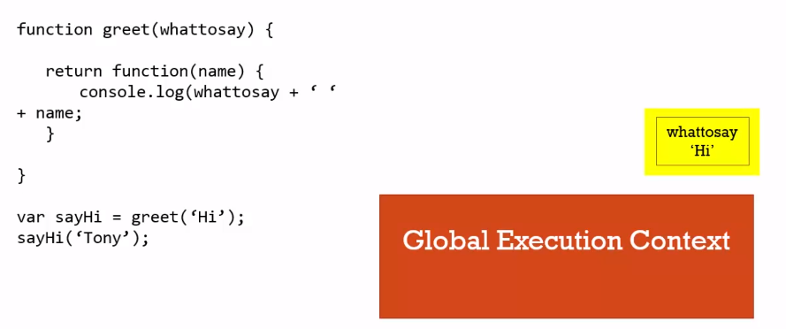

了解閉包 Closures (一)
這堂課將介紹一個在 JavaScript 中惡名昭彰的一個觀念 - 閉包 (Closures)
了解閉包
在過去的課程中所學到的 Execution Stack、Execution Context 等觀念都會在 Closures 中被應用到。
首先我們建立一個函式並回傳一個函式，接著，呼叫這個函式再加上一組括號呼叫回傳的函式，看起來有點奇怪，但其實就只是馬上執行回傳的函式。
1 | function greet(whattosay) { |
那如果我們透過一個變數儲存第一次函式的呼叫，再呼叫這個變數來執行回傳的函式呢?
1 | function greet(whattosay) { |
還是會得到和原來一樣預期的結果，為什麼這麼做也會成立呢 ? 因為當我們執行 sayHi 函式的時候，whattosay 這個變數仍然存在，其實這就是一個閉包 (Closures)。
讓我們依序拆解這段程式的執行流程，當我們執行 JavaScript 時，會先產生一個 Global Execution Context，接著，執行 greet 函式的時候會在 Context Stack 上產生它的 Execution Context， 並回傳一個匿名函式物件 (creates a function on the fly)。
這裡有一個問題是，每一個函式 Execution Context 都有其記憶體的位置，但當一個 Execution Context 在 return 抽離 Execution Stack 後，它的記憶體會發生什麼事 ?
一般來說，JavaScript Engine 會透過一個 Garbage Collection 的機制來清除這些內容，雖然 Execution Context 已經不在了，但其中的變數還是會留在該記憶體位置。

接著，當程式碼執行到 sayHi() 時，會再建立一個匿名函式的 Execution Context，同時帶有一個變數 name。
當這個匿名函式執行到 whattosay 這個變數時，無法在函式內找到這個變數，因此根據 Scoped Chain 的概念就會往外部環境逐層搜尋，這時候就會找到剛剛留在 greet 記憶體位置中的這個變數。
在這裡，我們把這個匿名函式的 Execution 和外部變數關 (Close) 在一起，這種現象在 JavaScript 就是一個閉包 (Closures)。透過 Closures 這個特性，可以確保在函式執行時找對其對應的外部變數，不論某個函式是否執行完畢將 Execution Context 抽離 Execution Stack，JavaScript Engine 仍然可以找到對應的外部變數。